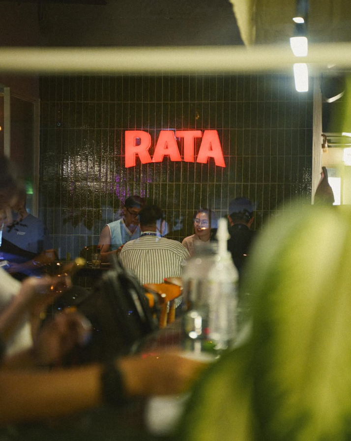
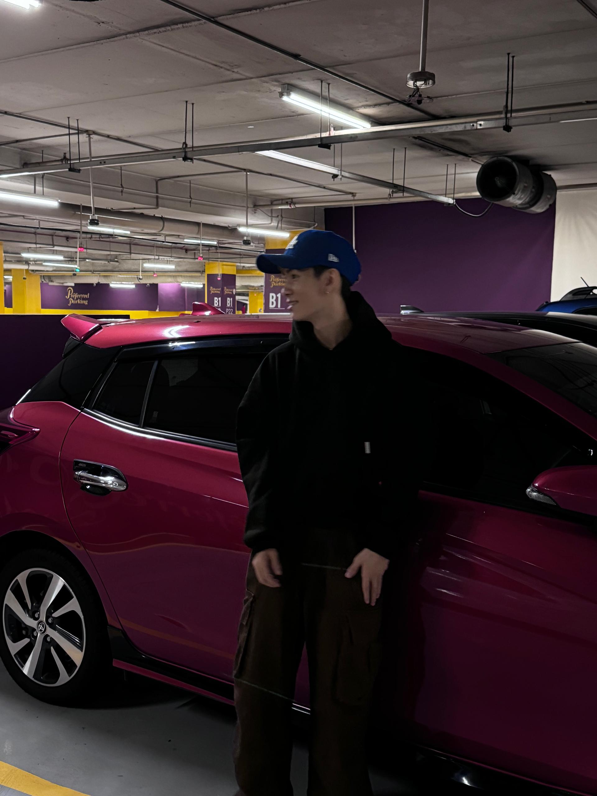
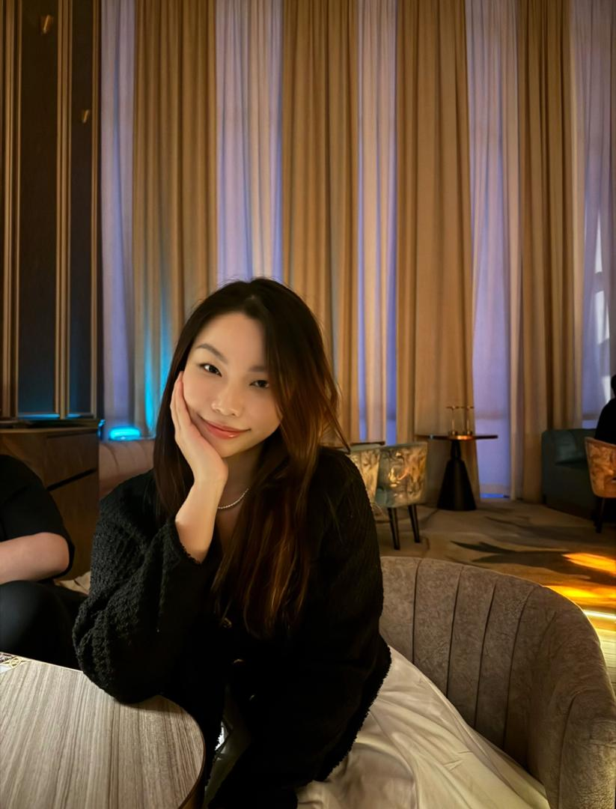
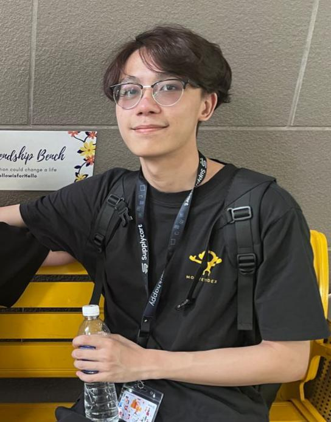

Welcome to Rata Subang Jaya!
The place where food meets heart. Located in Subang Jaya, we are a contemporary dining destination that brings together the passion for fresh and high-quality ingredients. Our team of chefs is dedicated to creating dishes that are inspired by both local and international cuisines, sure to delight.
At RATA, whether you’re seeking a casual bite, a family gathering, or celebrating a special occasion, our cozy and inviting atmosphere ensures every moment is enjoyable.
Join us and discover a place where great food, good company, and a welcoming vibe come together!
Colin
Group Leader

Isaiah
Group Member

Xiang Yee
Group Member

Brendan Goh
Group Member